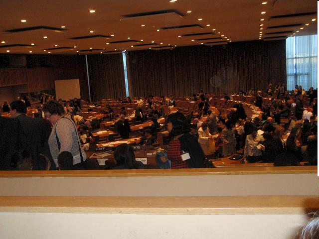

پذيرش > تریبون > گزارش كمپين > گزارشی غیر رسمی از وضعیت زنان در ایران

 گزارشی غیر رسمی از وضعیت زنان در ایران گزارشی غیر رسمی از وضعیت زنان در ایران
2 اردیبهشت 1389 - - نسخه قابل چاپ
گزارشی غیر رسمی از وضعیت زنان در ایران/ پانزده سال پس از کنفرانس پکن
ارائه شده به
پنجاه و چهارمین نشست کمیسیون مقام زن درسازمان ملل متحد
نیویورک، 10-12 اسفند ماه 1388
جمعی از فعالان جنبش زنان در ایران
در پنجاه و چهارمین نشست کمیسیون مقام زن درسازمان ملل متحد، گزارش غیر رسمی از وضعیت زنان درایران که توسط برخی از فعالان جنبش زنان تهیه شده بود دراختیار شرکت کنندگان در کنفرانس قرارگرفت. چکیده ای از این گزارش در سخنرانی رضوان مقدم در این نشست نیز ارائه شد.

دستآوردهای کنفرانس پکن
تغییر برای برابری - ازکنفرانس پکن تاکنون فعالان جنبش زنان در ایران با چالش های گوناگون رو به رو بوده اند. در نخستین حضورایران در کنفرانس پکن، علاوه بر هئیتی از سوی دولت ایران، برخی از فعالان زن نیز از ایران شرکت داشتند. این کنفرانس منجر به تشکیل برخی از دفاتر امور زنان در وزارتخانه ها شد که نگرش سنتی و مردسالارانه در آنها حاکم بود. این دفاتر به امور روزانه پرسنل زنان و زنان تحت برنامه وزارتخانه ها در حدی که چالش های برابرخواهانه در آن مطرح نباشد، می پرداخت. پس از باز شدن فضای سیاسی برای مشارکت اجتماعی در دوره اصلاحات (1376- 1384)، تشکل های بسیار زیادی از زنان با حمایت دولت و مرکز امور مشارکت زنان که وابسته به ریاست جمهوری بود، بوجود آمدند اما آنها نیز چالش های برابری خواهانه را کمتر مورد توجه قرار می دادند. با این وجود در این دوره هشت ساله تا حدی مباحث برابری خواهانه در جامعه جاری شد و بویژه مطبوعات نقش مهمی در آن ایفا کردند. طرح های مشترک دولت با صندوق جمعیت برای ارتقاء حقوق باروری معنادارتر شد و توانمندسازی زنان در چارچوب های اقتصادی، سیاسی و فرهنگی جریانسازی شد. در همین دوره بود که پیوستن به کنوانسیون رفع همه اشکال تبعیض علیه زنان در مجلس به تصویب رسید اما از سوی شورای نگهبان رد شد. در همین دوره بود که قانون خانواده توسط فعالان حقوق زن به چالش کشیده شد و حق حضانت کودک تا هفت سالگی به مادر داده شد. طرح های نه چندان عمده ای همچون افزایش دوران مرخصی زایمان به زنان شاغل اعطا شد اما خود این دارای آثار منفی در اشتغال زنان برجای گذاشت. بحث های خشونت علیه زنان به دولت تحمیل شد و سرانجام در سال پایانی دولت اصلاحات در قانون برنامه چهارم دولت هرچند موظف شد که همه اشکال خشونت را از زنان رفع کند، اما هرگز اجرا نشد. در این سالها دفاتر زنان در وزارتخانه ها و استانداری ها تعداد بسیار زیادی از زنان را جذب خود کرده و بودجه های خاصی به آنها تعلق گرفت. ارزیابی دقیقی از رابطه میزان بودجه های هزینه شده و میزان تغییر در زندگی زنان وجود ندارد. این دوره با افزایش اندکی در مشارکت زنان در سیستم مدیریتی اعم از شوراهای شهری، نمایندگی مجلس و مدیریت های میانی دولتی مواجه شد اما مدیریت های کلان کشوری اعم از وزارت و ریاست جمهوری هرگز به دست زنان سپرده نشد و همان مدیریت های میانی نیز به گونه ای بود که زنان قدرت اصلی رایا در تصمیم گیری ها در دست نداشتند و یا همان تعداد اندک نیز نسبت به مسایل زنان یا بی توجه بودند یا این که نگاهی بنیادگرایانه و سنتی نسبت به نقش زن داشتند و به دلیل فیلتر گزینش ایدئولوژیک، زنان متخصص در حوزه مسائل زنان در حاشیه قرار داشتند.
پس از روی کارآمدن دولت اصول گرای احمدی نژاد در سال 1384، بیکباره، مرکز مشارکت زنان به مرکز امور زنان و خانواده تبدیل شد و نهادهای تصمیم گیری زنان با کسانی در مصدر امور مواجه شدند که علیرغم زن بودن کاملا در راستای تسلط تفکر مردسالارانه و چارچوب سنتی برای حفظ خانواده حتی با تبلیغ برای چند همسری فعالیت می کردند. در همین دوره تهاجم سراسری به فعالان حقوق زن و تشکل های غیر دولتی زنان که برای توانمند سازی زنان با نگرش برابری خواهانه فعال بودند، صورت گرفت و زنان مورد بازداشت، محاکمه و زندان قرار گرفتند و تشکل های غیر دولتی آنها نیز پلمپ شدند. زنان در مصدر کار اعم از دولتی و نمایندگان مجلس تحکیم کننده قوانین نابرابر شدند و طرح های مشترک با صندوق جمعیت و سایر آژانس های سازمان ملل متحد در ایران متوقف شدند. مسئول مرکز امور زنان و خانواده رسما در سالی که به این پست گمارده شد اعلام کرد که به هیچوجه پایبند به هیچیک از پیمان ها و کنفرانس های بین المللی زنان نیستند و به مدت سه سال هم هیچ نماینده ای را به کمیسیون مقام زن اعزام نکردند. بنابراین فعالان حقوق زن و برابری خواه جنسیتی با چالش های بیشتری مواجه شدند
محدودیت های ارائه گزارش
در حالیکه بسیاری از تشکل های غیر دولتی و فعالان حقوق زن در بیشتر نقاط جهان در حال انجام تحقیقات ملی و گسترده در مورد اقدامات برنامه عمل کنفرانس پکن طی 15 سال اخیر بودند و در کشور های خود به نقد و بررسی می نشستند، محققان و فعالان حقوق زن در ایران فرصت یا امکان کافی برای دسترسی به منابع و کسب اطلاعات نداشتند و یا به دلیل فعالیت های حق خواهانه شان در گیر دادگاه و زندان بودند . به همین دلیل امکان انجام تحقیقاتی وسیع و علمی در سراسر کشور ایران برای تشکل های غیر دولتی دشوار بود. در عین حال آمارهای دولتی نه تنها چندان قابل اتکا نیستند بلکه عمدتا فاقد تفکیک جنسیتی هم هستند.
به رغم این محدودیت ها، گروهی از فعالان و اعضای تشکل های غیردولتی گرد هم جمع شدند تا با توجه به ظرفیت و توان خود، مسائل و مشکلا ت و خواسته های زنان ایران را شناسایی و راه حل های آنها را جستجو کنند.
به این منظور در سال 2007 میلادی، تعدادی از تشکل های غیر دولتی زنان گرد هم آمدند و علیرغم همه محدودیت های فعالیت برای تدوین خواسته های زنان تحت عنوان منشور زنان، اقدام به تحقیقی کیفی با تشکیل نشست هایی با زنانی از همه اقشارو گروه های سنی (زنان شاغل کارمند و کارگر، خانه دار، فعالان مدنی و سیاسی، و دختران جوان) که تا حدی در سطح کشور؛ منطقه مرکزی، شمالی، و جنوبی توزیع مناسب داشته باشند، به شناسایی مشکلات زنان و راه کارهای مورد نظر آنان از طریق روش بحث گروهی اقدام کردند. آنچه که در این گزارش آمده است حاصل بررسی های علمی جمعی زنان و مصاحبه با زنان فعالی است که در سالهای پس از کنفرانس پکن در عرصه های اجتماعی فعال بودند.
این گزارش حاوی چالش های زنان و خواسته های آنان است. بخش خواسته های زنان عمدتا همان متن منشوری است که پیش نویس آن در سال 1385، توسط جمعی از زنان حقوقدان، محقق، نویسنده، دانشگاهی، معلم، فعال مدنی با استناد به همان تحقیق کیفی تدوین شد و به نظر خواهی گذاشته شد و در بهار 1388 نهایی شد. این خواسته ها در 14 ماده تنظیم شده است که 12 محور پکن را پوشش می دهد. در بازنویسی این منشور برای ارائه در این گزارش چند نکته جدید نیز اضافه شده است.
چالش های زنان
چالش های اساسی زنان در ایران به مانند همه کشورها ریشه در سنت ها و قوانین مرد سالارانه دارد که در همه عرصه ها، از خانواده تا مشارکت سیاسی، اقتصادی، فرهنگی و اجتماعی خود را نشان می دهد. وجود خشونت های خانگی و انکار آن از سوی صاحبان قدرت و قانونگذاران و بستن فضاهای سیاسی برای مشارکت فعال زنان در همه عرصه های تصمیم گیری، قرن ها بر ایران سایه افکنده و شاهد مبارزات زنان برای تغییر این فضاها بوده است. عمر کوتاه دوره اصلاحات در ایران به مبارزات زنان شکل فعالیت های توسعه ای داد اما منجر به تغییرات اساسی نشد. از اینرو مبارزات زنان نیز شکل جدیدی به خود گرفت. انتخاب شیرین عبادی به عنوان برنده نوبل صلح، جان تازه ای به مبارزات زنان بخشید . پس از آن بودکه جمع هم اندیشی زنان برای شکل دادن فعالیت های جمعی زنان شکل گرفت، و تجمع های گوناگون زنان در اعتراض به خشونت، قانون واقدامات تبعیض آمیز تشکیل می شدند. دراین ایام بود که بزرگترین تجمع که حدود 6 هزار نفر را گرد خود آورد، حول اعتراض به تبعیض علیه زنان در قانون اساسی برگزار شد.
پس از روی کار آمدن دولت احمدی نژاد، بحث زنان درباره تبعیض در قانون ادامه یافت و منجر به تجمع دیگری در اعتراض به نابرابری در قوانین مدنی شد. هرچند این تجمع به خشونت کشیده شد و زنان زیادی بازداشت و دادگاهی شدند، اما بحث زنان در باره چگونگی طرح تبعیضات قانونی ادامه یافت و به شکل گیری کمپین یک میلیون امضا منجر شد. این کمپین، قوانین تبعیض آمیز زنان را شناسایی و نسبت به جمع آوری امضا در همه مناطق کشور و از میان همه اقشار جامعه اقدام کرد. این حرکت نیز تحمل نشد و بسرعت زنان و مردانی که در مراکز عمومی و با زدن در خانه مردم به جمع آوری امضا اقدام می کردند و گزارش های آن را منتشر می کردند، با سرکوب و بازداشت و محاکمه مواجه شدند. اما همچنان اقشار مختلف زنان در سراسر کشور به این کمپین ملحق می شدند و از آن استقبال می کردند.
قوانین تبعیض آمیزی که زنان برای تغییر آن امضا جمع می کنند عبارتند از قونین مربوط به ازدواج، طلاق، سرپرستی فرزندان، سن مسئولیت کیفری، ارث، دیه، تابعیت، شهادت و قوانین حامی قتل های ناموسی است. در قوانین مربوط به ازدواج، سن دختر 13 سال تمام تعیین شده، و ازدواج دختران در هر سنی منوط به مجوز پدر یا جد پدری است، که این خود باعث تداوم ازدواج های اجباری است. بر اساس قوانین مدنی، ریاست خانواده بر عهده شوهر است و در ازدواج دائم، نفقه زن به عهده شوهر است و هر گاه زن بدون مانع مشروع، از روابط جنسی امتناع کند، نفقه به او تعلق نمی گیرد، که این امر تشدید کننده و حمایت کننده انواع خشونت های شوهران به زنان است. زن از نظر محل اقامت تابع اقامتگاه شوهر است و زن باید در منزلی که شوهر تعیین می کند اقامت کند. طبق قانون مدنی شوهر می تواند زن خود را از حرفه یا صنعتی که منافی مصالح خانوادگی یا حیثیت خود یا زن باشد منع کند که عمدتا عاملی برای جلوگیری از استقلال اقتصادی زنان است. طبق قانون گذرنامه، زن برای دریافت گذرنامه نیاز به مجوز شوهر خود دارد. طبق قانون مدنی، مرد میتواند با پرداخت مهریه هر موقع دلش خواست بدون نیاز به اثبات تقصیر زن در دادگاه، او را طلاق بدهد اما زن برای درخواست طلاق باید ثابت کند که به دلایل متعدد از قبیل اعتیاد همسر، ترک منزل، ندادن مستمر نفقه، بیماری صعب العلاج مرد، محکومیت به زندان برای مدت پنج سال، زندگی برای زن غیر ممکن است و عمدتا اثبات این دلایل در دادگاه ها بسیار مشکل است. طبق قانون مدنی، پدر و جد پدری حق ولایت بر فرزندان را دارند و این در کنار مواد قانون مجازات اسلامی که در آن تصریح شده است که پدر یا جد پدری که فرزند خود را بکشد قصاص نمی شود ، تضمین کننده قتل های ناموسی توسط پدر و یا خانواده پدری است است البته در همین قانون مجازات اسلامی هم به مرد مجوز داده شده است که در صورتی که مردی همسر خود را در حال زنا با مرد دیگری ببیند و مطمئن شود که زن نیز تمکین کرده است می تواند در همان حال آنان را به قتل برساند. حق حضانت مادر بر فرزند در صورت جدایی از همسر فقط تا هفت سالگی است و پس از آن اولویت حق حضانت با پدر است. در تمام مواد قانون مجازات اسلامی، دیه زن نصف دیه مرد تعیین شده است.در قوانین آئین دادسی، در برخی از موارد زنان حق شهادت ندارند و در بقیه موارد شهادت زن نصف شهادت مرد تعیین شده است. طبق قانون مجازات اسلامی، پوشش زنان در انظار عمومی اجباری است و در صورت عدم رعایت آن با حبس و یا جریمه نقدی روبرو خواهند شد .
در کنار این کمپین، فعالان حقوق زن، کمپین های متعددی در پاسخ به نیازهای فوری از جمله مقابله با لایحه خانواده تشیکل دادند. این لایحه درصدد تثبیت چند همسری مردان حتی بدون اجازه زنان بود. مبارزات زنان کمپین "نه به لایحه خانواده" تصویب آن را دو سال به تاخیر انداخت. اما مجددا در سال جاری این لایحه در مجلس به بحث گذاشته شد. کمپین ضد سنگسار نیز از جمله کمپین هایی بود که با سنگسار زنان به مقابله پرداخت. در قانون مجازات اسلامی، زنان همسرداری که خارج از روابط زناشویی، دارای روابط جنسی هستند به سنگسار محکوم می شوند. کمپین ضد سنگسار درصدد بود که زمینه های چنین روابطی را از بین ببرد نه زنان را که خود قربانی تبعیض هایی هستند که ناخواسته به این روابط کشیده می شوند. علاوه بر آن، بسیاری از زنان محکوم به سنگسار، در دادگاه هایی محاکمه می شوند که دادگاه عادلانه نیستند وقضات، یکسویه با نگرشی سنتی و مردسالارانه، آنها را به سنگسار محکوم می کنند.
از عمده ترین چالش های زنان، موضوع خشونت های خانگی است که قوانین تبعیض آمیز نیز در کنار همه عوامل اقتصادی و فرهنگی از آن حمایت می کند. در حالی دولت ایران به انکار خشونت خانگی می پردازد که به گواه یک تحقیق میدانی در سال 1383، 66 درصد زنان در طول زندگی مشترک خود یکبار مورد خشونت قرار گرفتند. در تحقیق کیفی انجام شده برای یافتن مشکلات زنان، زنان در مباحث گروهی کاملا تاکید داشتند که آنها مورد تبعیض در خانه، در محیط کار و در جامعه قرار می گیرند. آنها از خشونت های فیزیکی و روانی ابراز نارضایتی می کردند. بسیاری از زنان از چند همسری دائم و موقت شوهران خود در عذاب بودند. و همه اینها که حمایت قانون را پشت خود دارد، منجر به احساس ناباوری و ناتوانی در زنان آسیب دیده از قوانین تبعیض آمیز می شود. در این نشست ها زنان تاکید داشتند که افسردگی در زنان آمار بالایی دارد اما چون به آن توجه نمی شود جایی در آمار پیدا نمی کند. آنها به بالا بودن میزان خودکشی ها و خودسوزی زنان بخاطر فشارهای مردسالارانه در خانه و اعمال خشونت ها اشاره داشتند که هیچ پناهی در قانون و در جامعه برای آنها در نظر گرفته نشده است.
فرصت های برابر آموزش نیز از جمله عرصه هایی است که پس از سالها مبارزه، مجددا از دست زنان ربوده شد و قوانین محدود کننده ادامه تحصیل زنان در سطوح آموزش عالی بجریان افتاد. دختران به دلیل نیم انسان بشمار آمدن و در جهت اثبات هویت و توانایی های خود و در سایه فرصت هایی که خانواده ها برای آنها ایجاد کرده بودند و با تلاش های بسیار زیاد به امید اینکه تحصیل، امکانات برابر زندگی برای آنها بدنبال خواهد داشت، در سال 1385 موفق شدند که 65 درصد ورودی دانشگاه ها را به خود اختصاص دهند، هر چند همچنان قوانین دست و پاگیر ضد زن و سنت های رایج اجتماعی، مانع می شد که نسبت فارغ التحصیلان دختر در همین حد باقی بماند، اما صاحبان قدرت این برتری دختران را تاب نیآوردند و اقدام به سهمیه بندی جنسیتی برای ورود به آموزش عالی کردند. این سهمیه بندی جنسیتی در بسیاری از رشته ها اعمال شد و در کنار آن با سهمیه بندی های بومی مانع ورود بسیاری از دختران به آموزش عالی شد در شرایطی که نسبت به پسران پذیرفته شده در دانشگاه ها از برتری علمی برخوردار بودند.
فرصت های نابرابر زنان و دختران از امکانات فرهنگی و ورزشی از مباحث دیگری است که در همه نشست های گروهی، زنان به آن تاکید داشتند. در شهری همچون تهران تعداد مراکز ورزشی برای دختران به مراتب کمتر از مراکز ورزشی برای پسران است چه برسد به شهرهای کوچکتر و دورافتاده تر که اساسا در برخی از آنها هیچ ورزشگاهی برای زنان وجود ندارد. گاهی در برخی از شهرها امکانات ورزشی بین مردان و زنان از نظر ساعت و روزهای قابل استفاده تقسیم می شود که ساعات نامناسب همواره به زنان تعلق می گیرد که امکان استفاده از آن را پیدا نمی کنند.توجه نامناسب به ورزش عمومی زنان، به گونه ای است که طبق آمار سال 1387، 76% دختران دبیرستانی دچار ناهنجاری قامتی هستند.
هر چند سیستم بهداشت در ایران قدمت زیادی دارد و همین خود باعث بهبود شاخص های بهداشتی در ایران بوده است، اما همین سیستم بهداشت برای زنان تبعیض آمیز است، بویژه در امر بهداشت باروری که بار مسئولیت آن بر دوش زنان است و مراکز بهداشت به گونه ای سازماندهی شده است که عمدتا زنان برای پیشگیری از بارداری ناخواسته ترغیب می شوند و خشونت های اعمال شده بر زنان اصلا در این مراکز مورد توجه قرار نمی گیرند. انکار ایدز و شیوه های انتقال آن در سطح کشور و آسیب پذیر بودن زنان بویژه با توجه به قانونی بودن ازدواج موقت برای مردان، زنان را بیشتر در معرض این بیماری قرار می دهد و از آنجا که درک درستی در جامعه نسبت به آن وجود ندارد زنان مبتلا به ایدز از ابراز بیماری و اقدام به درمان خودداری می کنند. به همه اینها باید به خصوصی شدن درمان اشاره داشت که با توجه به فرهنگ زنان که عمدتا به سلامت خود پس از تامین همه نیازهای خانواده اقدام می کنند، و دسترسی کمتر آنها به امکانات مالی باعث می شود که بسیاری از زنان به درمان های بموقع خود توجه نکنند.
وضعیت اقتصادی ایران بیشترین فشار را بر زنان تحمیل می کند. آمارهای اقتصادی و میزان تورم و تاثیر آن در اشتغال در ایران به هیچوجه قابل ارجاع و استناد نیست. اما واقعیت روزمره که مردم آن را با گوشت و پوست خود احساس می کنند، رشد فقری است که آثار همه جانبه آن بر زنان مشهود است. زنان که در مشاغل کم درآمد بیشتر اشتغال دارند، با بسته شدن کارخانجات و فلج شدن سیستم اقتصادی اولین کسانی هستند از کار بیکار می شوند و یا حاضر به ادامه کار با درآمدهای بسیار پائین هستند. در کنار این باید به اثر بیکار شدن مردان که نان آور خانه هستند بر دختران و زنان در خانه اشاره کرد. گزارش های متعددی از افزایش میزان خود فروشی دختران و زنان حتی در روزنامه های دولتی به چاپ می رسند. اعتیاد که یک معضل اجتماعی است و اساسا به زمینه های از بین بردن آن نیز توجه نمی شود، باعث رشد فقر در خانواده و تحمیل خود فروشی و فقر چند جانبه بر زنان می شود. این فقر خانمان سوز زنانه با حمایت های قانون از مرد خانواده و معضلات بر سر حق طلاق زنان و عدم توجه به خشونت های خانگی و خشونت در محیط کار که بر زنان تحمیل می شود، برای زنان به معنای نابودی نسل های پی در پی است.
معضل اساسی فقر در ایران نه کمبود منابع، بلکه تجمیع ثروت و قدرت به شکلی کاملا محدود است. این تجمیع ثروت موجب شده است تا زنان و کودکان که با انواع تبیعض مواجهند، در قاعده هرم اجتماعی قرار بگیرند و تضییقات در مورد آنها شدید باشد. این تمرکز گرایی از نظر جغرافیایی، موجب عقب نگه داشتن اقتصادی، سیاسی و اجتماعی و فرهنگی مناطقی شده است که اقوام متنوع ایرانی در آن حضور دارند. عقب نگهداشتن این مناطق شدت تبعیضات و تضییقات را برای زنان در اقوام که تحت فشارهای بیشتر کلیشه های جنسیتی هستند، چند برابر می کند. مهاجرت مردان در جستجوی کار از روستاهای این مناطق و خالی شدن از سکنه یا پیر نشین شدن آنها، و رها شدن زنان در این روستاها با کوله باری از مشکلات، تنها یک نمونه کوچک حاصل تمرکز ثروت و قدرت است.
با این وجود مشارکت اقتصادی زنان در آمارهای رسمی هم نه تنها بسیار پائین است بلکه برای پائین نگه داشتن آن اقدامات اساسی انجام می شود. آمار سال 2010 حکایت از این دارد که زنان 12 درصد از فعالیت های اقتصادی را در دست دارند. سهم زنان ایران در مدیریت و قانونگزاری در کشور، طبق آمار سازمان ملل در 2008، 16 درصد است که این آمار رتبه 101 را در بین 120 کشور جهان به ایران داده است. اما آمار دیگری سهم زنان در مدیریت ارشد جامعه را تنها2/5 درصد اعلام کرده است.
بسیاری از کارشناسان نداشتن خودباوری، سلطه مردانه محیط های کار، ندادن فرصتهای برابر شغلی از سوی کارفرما، تبعیض های قانونی در آزاد بودن انتخاب نوع و محل کار، و عوامل اجتماعی و فرهنگی را در سهم اندک زنان در اقتصاد و مدیریت موثر می دانند، اما نگرش کلی دولت سنت گرای ایران در پنج ساله اخیر نیز دلیلی بوده است بر اینکه زنان نتوانند در رقابتهای کاری بر مردان پیشی بگیرند. نمونه این تبعیض ها کاهش ساعتهای کاری زنان نسبت به مردان به دستور وزیر فرهنگ دولت نهم ، و ممنوعیت کار زنان در ساعات اضافه کاری است. به همه اینها باید ادبیات حاکم بر رسانه های حکومتی و در صدر آنها صدا و سیمای جمهوری اسلامی را افزود که به طور دائم مبلغ خانه داری زنان است و اصولا همسر داری و مادر بودن برای زنان را مهمتر از داشتن ویژگی های دیگر او به عنوان یک انسان می داند و چنان زن را در سایه این دو ویژگی مهم می داند، که گویی اگر این دو ویژگی از او گرفته شود زن ار اعتبار انسان بودن ساقط می شود!
حقوق بشر زنان در کشور ایران که دچار نقض گسترده و نظام مند حقوق بشر است خود حکایت دیگری دارد. نه تنها قوانین تبعیض آمیز، حقوق زنان را به کلی منکر می شود، بلکه در عمل نیز ابتدایی ترین حقوق تضمین شده قانونی زنان از آنان دریغ می شود. به لحاظ قانونی زنان حق رئیس جمهور شدن و قاضی شدن ندارند و شهادت آنها نصف شهادت مردان است. حجاب اجباری، زنان را ازانتخاب حق پوشش محروم کرده است. هنوز کودکان بزهکار زیر 18 سال علیرغم پیوستن ایران به پیمان حق کودک حکم اعدام دریافت می کنند و اعدام می شوند. روزنامه ها عملا از درج اخبار مربوط به جنبش زنان و حقوق آنها منع شده اند. مجلات ویژه زنان از جمله اولین مجلاتی بودند که بسته شدند. در کشوری که بزرگترین سانسور علیه آزادی بیان در جریان است، وب سایت های زنان بیش از سایر وب سایت ها از دسترس خارج می شوند. در ایران که اکثر تجمع های مسالمت آمیز با خشونت مواجه می شوند، زنان حتی حق جمع شدن در منزل های خود را هم ندارند و با احضار، بازداشت ، محاکمه و زندان مواجه می شوند.
در ایران که کشوری است با تنوع فرهنگی و قومیت های متعدد، حقوق قومیت ها به رسمیت شناخته نمی شود و حتی حق تحصیل به زبان مادری که در قانون اساسی به رسمیت شناخته شده است، از آنان سلب می شود، و این خود باعث می شود تا زنان در قومیت ها آسیب بیشتری ببینند. چرا که همین منع تحصیل به زبان مادری، افت تحصیلی را در میان دختران در اقوام افزایش می دهد و اعتماد به نفس آنها را کاهش می دهد. به همین دلیل توانایی زنان در اقوام برای ابرازوجود خود بشدت آسیب دیده است. از سوی دیگر مقابله با اقوام از سوی حاکمیت مرکزی، باعث می شود که بسیاری از زنان آگاه به تبعیض های رایج علیه زنان، برای حفظ وحدت در میان مردم قوم خود، دست از مبارزه با کلیشه های جنسیتی بکشند و این خود باعث به تاخیر افتادن رفع تبعیض از زنان و قوام یافتن ستم بر زنان در اقوام می شود باید به این نکته از چالش زنان در اقوام نیز اشاره کرد که یکی از دل نگرانی های جدی زنان در اقوام، وجود تنش ها و یا واهمه از ایجاد تنش های بین قومیت هاست که دولت برای منحرف کردن مسائل قومیت ها، بذر کینه را در میان اقوامی که در جوار هم ساکن هستند، می کارند، به طوری که این اقوام در برخی موارد، یکدیگر را مسئول بدبختی های خود می دانند. بزرگترین متضررین این منازعات احتمالی، زنان و کودکان هستند. . شدت بخشیدن به برخی از طرح های دولت در آموزش نیز هر چند ظاهر توجه به مناطق کمتر توسعه یافته را دارد اما عملا مانع تحرک دختران و زنان در اقوام می شود و این خود از رشد آنها جلوگیری می کند. از جمله این طرح ها باید به سهمیه بندی مناطق برای ورود به دانشگاه ها اشاره کرد که عمدتا باعث می شود که دختران در همان مناطقی که دنیا آمده اند و زندگی می کنند وارد دانشگاه بشوند و این منجر به محدودیت بیشتر آنها شده است.
.
خواسته های زنان
ماده 1: برابري
برابري و رفع تبعيض از زنان جوهر و شالوده مطالبات ما زنان و شهروندان ایران است که در میان طبقات و گروههاي اجتماعي مختلف بيش از يك قرن برای دستيابي به حقوق و آزادي هاي فردي و شهروندي مبارزه كرده اند. ما بر اين باوريم كه برابري جنسيتي لازمه دستيابي به آزادي و عدالت، اين دو آرمان هميشگي جامعه ايراني است. برابري اجتماعی، فرهنگی، اقتصادي ، سياسي و حقوقي پنج رکن به هم پیوسته و غیرقابل تفکیک اند. ما زنان به عنوان شهروندان ایران خواستار آنيم كه از حقوق، آزادي ها و فرصت هاي برابر با مردان در خانواده، محل كار، محيط اجتماعي و سياست برخوردار باشيم. ما ضمن آنکه خواهان مشاركت كامل و برابر در بنای جامعه آزاد و بدون تبعیض ایران دوشادوش مردان هستيم، می خواهیم از طریق تحقق مفاد این منشور از لطمه هاي بزرگ اجتماعي و اقتصادي ای که بر اثر بی¬توجهی به نقش زنان بر کل جامعه وارد مي شود جلوگیری کنیم.
حكومت شامل نظام قانونگزاري، قضائيه و مجريه بايد ساز و كار ويژه اي براي تضمين تحقق عملي اصل برابري در همه سطوح ايجاد کند. نهادهاي مدني بر آمده از دل مردم و گروه هاي اجتماعي مشروع ترين محيط براي تغيير جهت وصول به اصل برابري اند. رسانه ها محيطي براي شنيده شدن صداهاي زنان اند كه نقشي محوري در عمومي كردن و فرهنگ سازي در جهت رفع تبعيض و نهادينه كردن اصل برابري بر عهده دارند و نهايتاً بخش خصوصي و نهادهای صنفی مرتبط با آن به عنوان يكي از اركان انباشت سرمايه اجتماعي و مادي مي تواند در رفع تبعيض از زنان و پيشبرد اصل برابري بسيار موثر باشد.
براي دستيابي به برابري لازم است اقدام های كليدي زير براي تضمين عملي منشور صورت گيرد:
1- اصول 19، 20، 21 و 115 قانون اساسی بايد براساس اصل برابري جنسيتي اصلاح شوند.
2- كميسيون عالي زنان مركب از نمايندگان سه قوه، فعالان جامعه مدني، اصناف، گروه هاي مختلف اجتماعي، و رسانه ها بايد طراحي شود كه هدف آن سياستگذاري براي نهادينه سازي و اجرايي كردن اصل برابري و رفع موانع و بازنگري روند تحقق برابري جنسيتي مطابق با خواسته هاي منشور زنان باشد.
3- براي تحقق اصل برابري لازم است نظام بودجه بندي، و برنامه هاي توسعه و نحوه تخصيص و صرف بودجه با رويكرد تفكيك جنسيتي طراحي شود
4- اجرا و نحوه صرف بودجه هاي جنسيتي بايد تحت نظارت كارشناسان و نهادهاي مدني زنان قرار گيرد.
5- نهادهاي دولتي موظفند دسترسي آزاد به اطلاعات را جهت تضمين اصل برابري در سياستگزاري ها و برنامه ها براي نهادهاي مدني و كارشناسان جنسيت ايجاد كنند.
ماده 2: قانون و ساز و کار قضایی
در یک نگاه کلی، قوانین مدنی، جزایی، استخدامی و کار و تامین اجتماعی، حاوی تبعیض های جنسیتی فراوان است. قوانین خانواده به عنوان اصلی ترین منبع حقوقی حاکم بر زندگی زنان در برگیرنده نابرابری های زیادی است. از جمله اینکه مرد، رییس خانواده، ولی و سرپرست آن به شمار می رود و در مقابل تامین نفقه زن و فرزندان، تصمیم گیری های مهم خانواده، از جمله تعیین محل اقامت، تعیین تعداد فرزندان، اشتغال یا عدم اشتغال زن، دفعات و نوع برقراری رابطه جنسی، اداره اموال فرزندان غیر رشید، صدور یا عدم صدور اجازه ازدواج دختر باکره خود و... از اختیارات غیرقابل تفویض اوست. همچنین در حالی که عملا در بسیاری از خانواده های ایرانی، نان آوری، بین زن و مرد تقسیم شده یا حتی منحصرا بر دوش زنان قرار دارد، باز هم با همین توجیه، ارث و دیه زنان، در موقعیت های مختلف به طور کلی نصف مردان است و نیز در قوانین استخدامی، زنان از مزایای برابری چون فوق العاده عائله مندی یا حق مسکن برخوردار نیستند. طبق قوانین خانواده، تعدد زوجات برای مردان قانونی است، زنان از حق طلاق برابر با مردان برخوردار نیستند و سن ازدواج دختران، 13 سال تعیین شده است. همچنین در آیین دادرسی و قوانین جزایی، شهادت زنان، نیمی از شهادت مردان ارزش دارد، سن مسئولیت کیفری دختران 9 سال قمری (8 سال و 9 ماه) است در حالی که این سن، برای پسران 15 سال و طبق کنوانسیون حقوق کودک، 18 سال است. هنوز هم زنان نمی توانند به تنهایی قاضی صادر کننده رای باشند و تنها در دادسراها و در برخی از دادگاهها، رای آنها می تواند به رای قضات مرد منضم شود یا از سوی دادستان تایید گردد.
برای احقاق حقوق قانونی زنان اقدامات زیر ضروری است:
1- زنان خواستار برابري در تدوین ، تفسير و اجراي قانون هستند. تنها ازاين طريق قوانین موجود براساس موقعيت فرهنگی، سياسي ، اقتصادي و اجتماعي زنان بازنگری شده و اصل برابری در سياست و خط مشي همه ارکان تصمیم ساز کشور محقق مي شود.
2- قانون بايد تحقق عملي برابري زنان و رفع تبعيض از آنان را ترويج كرده و تضمين نمايد. برابري زنان در برابر قانون بايد در تمامي روندهاي قانوني، اجرايي و سياستگزاري و قضايي و شبه قضايي مد نظر قرار گيرد.
3- دولت ايران موظف است به كليه قراردادها، و تعهدات بين المللي در جهت رفع تبعيض و خشونت عليه زنان كه به آنها پيوسته متعهد بماند و تحقق عملي آنها را ممكن سازد. دولت همچنين موظف است بدون شرط تحفظ به كنوانسيون ها و معاهدات بين المللي اي همچون «كنوانسيون رفع كليه اشكال تبعيض عليه زنان» بپيوندد كه هدف آنها تحقق اصل برابري در جوامع انساني است.
4- زنان بايد به گونه اي برابر در نهادهاي مرتبط با قانون اساسي، قوه قضائيه، قضات، تمامي دادگاه ها، و كميسيون ها از جمله كميسيون هاي حقوقي و قضايي و وزارت دادگستري مشاركت كرده و در آنها نماينده داشته باشند.
5- قوانین ازدواج، طلاق، ارث، و بازنشستگی زنان باید با در نظر گرفتن نقش مستقیم وغیر مستقیم زنان در اقتصاد و در آمد خانواده به نفع زنان تغییر کند و با مردان برابر شود.
6- زنان در همه گروه های اجتماعی به شدت با چند همسری و صیغه مخالف اند. از این رو لازم است که صيغه و تعدد زوجات منسوخ شود .
7- قوانین مربوط به حضانت و نیز عدم برخورداری فرزندان زنان شاغل از مزایای بازنشستگی مادر پس ازفوت باید تغییر کند. همچنین باید قوانین ویژه ای برای زنان شاغلی که درآمد خود را صرف خانواده می کنند ، به ویژه به هنگام طلاق و یا فوت به تصویب برسد.
8- قانون کار باید به نفع زنان تغییر کند و حق اولاد و حق مسکن و سایر حقوق به زنان تعلق گیرد.
9- قوانینی که دخالت پلیس و نیروهای انتظامی به حریم فردی و خصوصی شهروندان اعم از زن و مرد را مجاز می دارد، باید ملغي شوند.
10- قوانيني كه قتل و هرگونه تعرض به زن را توسط شوهر، و ساير وابستگان نسبي و سببي تسهيل مي كند، بايد ملغي شوند.
11- قوانيني كه مجازات زنان را به خاطر نوع پوشش و معاشرت آنها مجاز مي دارند، بايد ملغي شوند.
12- موانع قانونی در راه ادامه تحصیل دختران در خارج که به کسب اجازه از پدر موکول شده است، و در داخل که با مانع سهمیه بندی جنسیتی و بومی سازی مواجه شده است، باید مرتفع گردد.
13- نهادهاي حكومتي، بخش خصوصي، رسانه ها و نهادهاي جامعه مدني بايد برنامه هاي آموزشي فراگیر براي رفع تعصب و كليشه هاي جنسيتي و نيز ترويج برابري زنان از نظرحقوقي تدوین كنند.
14- دادگاه ها و نهادهاي صنفي مرتبط با مسائل حقوقي موظف اند به همه زنان خدمات حقوقي و قانوني رايگان در هنگام دعاوي حقوقي ارائه دهند.
15- آموزش قوانین حقوقی جمهوری اسلامی (قانون ارث، ازدواج و طلاق،تعدد زوجات، و نفقه) به زنان باید توسط نهادهای دولتی و سازمان های غیر دولتی جهت آگاهی واشراف آنها به هنگام ازدواج،اختلافات خانوادگی ،محاکم و دادگاه های خانواده و نیز اطلاع از نابرابری ها وتبعیض ها و موانع موجود درقوانین و عرف و فرهنگ اجباری شود.
ماده 3 : خشونت عليه زنان
خشونت يكي از مهمترين موانع دستيابي به برابري و رفع تبعيض از زنان و اعتلاي شخصيت زن در جامعه است. نیمی از زنان ایرانی حداقل یکبار در عمر خود در معرض خشونت فیزیکی واقع شده اند. آمار خشونت های روانی، کلامی، و مالی بسیار بیش از خشونت فيزيكي است. نظام تبعيض آميز قانوني و سياسي و اجتماعي در ايران خشونت عليه زنان را نهادينه و تشويق مي كند. زنان از يكسو در معرض خشونت خانواده و اجتماع قرار دارند و از سوي ديگر در معرض خشونتي كه از سوي قانون و نهادهاي حكومتي بر آنها اعمال مي شود. همچنین باید تاکید کرد که بسیاری از زنان شناخت درستی از خشونت علیه زنان ندارند و بسیاری از مواردی را که منجر به سلب حقوق آنها می شود، طبیعی می انگارند.
برای تغيير این وضعیت اقدامات زیر ضروری است:
1- نهادهاي حكومتي بايد كليه قوانين و رويه ها و سياست هايي را كه تمهيدات اعمال خشونت عليه زنان را فراهم و به آن دامن مي زنند، بر چيند.
2- خشونت علیه زنان و تشخیص انواع آن و راه های رهایی از آن باید به زنان آموزش داده شود.
3- هر نوع سیاستگزاری، قانونگزاري و رویه ای که به طور مستقیم و غیر مستقیم خشونت علیه زنان و کودکان را از طریق دامن زدن به جنگ افروزی، ایجاد شرایط جنگی و ناامن برای زنان، مناقشات مسلحانه یا دامن زدن به آن، آواره شدن زنان از خانه و کاشانه و محل سکونت، تسهيل خطر حملۀ نظامی، حمله اتمی، شیمیایی، موشکی، حملات مقطعی نظامی، چریکی، یا هر نوع اقدام دیگری که زندگی جسماني و رواني و بهداشت و سلامتي زنان را به خطر انداخته، خطر تجاوز به زنان و کودکان آنها را در پی داشته باشد، باید هر چه سریعتر متوقف شود.
4- قانون مجازات خشونت عليه زنان در خانواده، جامعه و محيط هاي كار و نیز قانون مجازات خشونت عليه كودكان به ويژه دختربچه ها بايد توسط قانونگزار و با كمك نهادهاي مدني تدوين شود.
5- خانه هاي امن براي زنان خشونت ديده متأهل و مجرد به وسيله سازمان هاي غير دولتي زنان بايد ايجاد شده و تحت حمايت مالي دولت قرار گيرند.
6- نهادهاي حكومتي، رسانه ها، و جامعه مدني و بخش خصوصي بايد آموزش های فرهنگی و سيستم هاي پيشگيري از خشونت را به دانش آموزان در سطوح مختلف تحصيلي، مردان، زنان و خانواده ها ارائه كنند .
7- نهادهاي حكومتي و جامعه مدني بايد عوامل خود سوزی زنان را از ميان برداشته و شرایط روان درمانی وحفاظت از زنان ودختران آسیب دیده را تأمين كنند.
8- نهادهاي حكومتي، جامعه مدني و بخش خصوصي موظف اند از عوامل موثر در تجاوز به زنان و دختربچه ها به ويژه كودكان كار جلوگيري كرده و كار كودكان و به ويژه دختر بچه ها را ممنوع كنند.
9- قانون بايد به طور جدي زمينه هاي تجاوز محارم به کودکان به ویژه به دختران و دختربچه ها را از ميان برده و با فرهنگ پنهان سازی تجاوز از ترس یا برای حفظ آبرو که موجب تداوم آن می شود مقابله كند.
10- نهادهاي حكومتي، مدني، و رسانه ها بايد با هر گونه ترويج و اعمال خشونت مستقیم و غیر مستقیم در خانواده (توهین،تحقیر ،محرومیت از کار و تحصیل، ازدواج اجباري و جز اينها) مقابله كنند.
11- نهادهاي حكومتي بايد با هر گونه خشونت مأمورين دولتي با زنان كه تحت عنوان طرح هاي مقابله با اشكال مختلف پوشش زنان در كليه فضاهاي عمومي و رسمي اعمال مي شود، مقابله كنند.
12- قانون بايد عدم رسیدگی و بی حرمتی و خشونت به سالمندان به ویژه زنان سالمند را از نظر قضائی قابل تعقیب دانسته و با آن مقابله كند.
13- نهادهاي دولتي موظف اند شبكه هاي حمل و نقل ايمن را براي زنان و به ويژه دختران جوان فراهم آورده و كليه عوامل ايجاد نا امني در فضاي عمومي را از ميان ببرند.
14- نهادهاي دولتي و بخش خصوصي موظف اند امنیت محيط هاي کار را براي زنان تضمین كنند و شرايط ايجاد خشونت عليه زنان را در محيط هاي كاري از بين ببرند.
15- نهادهای دولتی موظف اند موسسات و واحدهای مددکاری را جهت ارتقا سطح آگاهی وحل مشکلات روانی زنان به صورت رایگان ايجاد كرده و آنها را بهبود بخشند.
16- رسانه ها باید اشکال مختلف خشونت و تعرض به زنان در خانواده و فضای عمومی را گزارش کرده و اشکال مقابله با آن را ترویح و تشویق کنند.
ماده 4: خانواده
روابط ميان زنان و مردان در خانواده ايراني نابرابر است. قانون نابرابري در خانواده را در قالب ولايت مرد بر زن و لزوم اطاعت و تمكين زن به رسميت شناخته است. عرف، تفسير رايج از مذهب، و فرهنگ نيز زنان را در مناسبات خصوصي فروتر از مردان قرار مي دهد. در مناطق محروم ازدواج هاي اجباري رايج است . همچنين ازدواج در سنين پايين در بسياري از مناطق باعث به مخاطره افتادن سلامت زنان و بارداری های ناخواسته ، كاهش حق كنترل زنان بر زندگي و فرودستي مضاعف آنها شده است. قانون نيز حق بي چون و چراي شوهر را بر بدن زن به رسميت مي شناسد. انواع مختلف خانواده ها از نظر قانون و عرف به رسميت شناخته نمي شوند و در نتيجه از حقوق ، وظايف و منافع يكسان برخوردار نيستند. از نظر عرف و قانون، زنان جز در صورت فوت همسر يا طلاق سرپرست خانواده به حساب نمي آيند. زنان در طي ازدواج و زمان انحلال از حقوق برابر با مردان و در صورت عدم ثبت ازدواج که در برخی مناطق رایج است و ازدواج ها به صورت شرعی انجام می شود، از حق ارث و نفقه برخوردار نيستند. مسئوليت هاي خانگي حتی در شرایط اشتغال تمام وقت زنان به طور برابر تقسيم نمي شود و مردان خانواده به منابع مادي خانواده دسترسي بيشتري دارند. شيوع رسم هاي ناپسند همچون مداخلات افراد خانواده شوهري، به فرودست شدن زنان منتهي مي شود. قانون و عرف زنان خانه دار را از حق برخورداري از امتيازات رفاه اجتماعي محروم كرده و دسترنج زنان خانه دار به حساب آورده نمي شود.
برای تغيير این وضعیت اقدامات زیر ضروری است:
1- زنان بايد از حق انتخاب شريك و همسر خود بدون اجبار عرف و قانون برخوردار باشند.
2- حق بدن و تمايل زنان در رابطه جنسي، دفعات و نحوه برقراري آن، بارداري، و سقط جنين بايد به رسميت شناخته شود.
3- نهادهاي حكومتي، رسانه ها، جامعه مدني و بخش خصوصي هر يك به تناسب بايد مكانيسم هاي تشويقي براي ايجاد خانواده برابر، تقسيم مسئوليت هاي خانوادگي بين تمام اعضاي خانواده، افزايش قدرت تصميم گیری و دسترسي برابر زنان به شاخص های قدرت در خانواده ، ايجاد كنند و در مورد عدم دخالت خويشاوندان و عوامل بيروني در مناسبات خانوادگي فرهنگ سازي كنند.
4- نهادهاي حكومتي و رسانه ها بايد حق سلامت، حق فراغت و حقوق اقتصادی مادران و زنان خانه دار را به رسميت شناخته و ترويج كنند.
5- رسانه ها بايد روند تغيیرتقسیم مسئولیت های بیرون و درون خانه بین زن و شوهر و نقش های جدید تصمیم گیری زنان در خانواده را تشويق و ترويج كنند و تقسیم مسئولیت ها باید به پسران و مردان آموزش داده شود.
6- دولت بايد زنان خانه دار، زنان سالمند، و معلول و از كار افتاده را از هزينه معاش كافي و امتيازات رفاه اجتماعي برخوردار كند و آنها را تحت پوشش بيمه هاي خدمات درماني، از كار افتادگي و معلوليت قرار دهد.
7- زنان بايد به عنوان سرپرست از حق حضانت و ولايت بر كودكانشان، حق انتقال تابعيت به فرزندانشان، و انجام معاملات اقتصادي به نيابت از فرزندان برخوردار باشند.
8- زنان داراي ازدواج هاي ثبت نشده بايد از حق ارث بري يكسان از همسران خود برخوردار باشند.
9- قوانين ازدواج و طلاق و خانواده كه به صورت رسوم عرفي يا مذهبي تبعيض آميز در مورد زنان اقليت هاي مذهبي و قومي اعمال مي شود، بايد براساس اصل برابري اصلاح شود.
10- وظيفه دولت، رسانه ها و نهادهاي جامعه مدني است كه محدودیت¬ها و کنترل¬های شدید و توام باخشونت خانواده ها بر روی دختران جوان و مجرد بویژه دانش آموزان ودانشجویان را از طريق وضع قوانين و مقررات و ترويج فرهنگ خانواده برابر و رفتار يكسان با پسران و دختران در خانواده رفع كنند.
ماده 5: آسيب هاي اجتماعي
توزيع نا متوازن ثروت، گسترش فقر، محرومیت های فرهنگی، قوانین تبعیض آمیز، رواج فساد و سوءاستفاده ازشبکه های قدرت در كنار محدوديت ها و كنترل عرفي زنان و دختران به ويژه در مناطق محروم و فرودست بودن آنان در مناسبات خانوادگي، در سال هاي اخير آسيب هاي اجتماعي را در تمام نقاط ايران افزايش داده است. اعتياد يكي از مهمترين معضلاتي است كه زنان به طور مستقيم و غير مستقيم در معرض عواقب آسيب زاي آن قرار دارند. به رسميت نشناختن فاجعه ايدز توسط نهادهاي رسمي و عدم توجه به تجارت جنسي موجب گسترش غير قابل كنترل ايدز و بيماري هاي ديگرشده است. فرار دختران، خودكشي، رواج افسردگي و بيماري هاي رواني ، رشد جرائم در ميان آنها ناشی از عوامل فوق و ترویح خشونت بر زنان است.
براي رفع آسيب هاي اجتماعي جنسيت محور لازم است اقدامات زير اتخاذ شود:
1- دولت و رسانه ها موظف اند تا با گسترش عدالت اجتماعي، رفع تبعيض ها، مبارزه با فساد و خشونت وسوء استفاده از قدرت در همه اشکال آن، زمينه هاي اجتماعي آسيب هايي همچون اعتياد، تن فروشي و تجارت جنسي و قاچاق زنان، و بيماري هاي ناشي از آنها را برطرف كنند.
2- جهت پيشگيري از گسترش آسيب هاي اجتماعي جنسيت محور لازم است عوامل زمینه ساز در خانواده شامل فقر، ،اختيارات بي حد و حصر پدر و شوهر در خانواده ، خودکامگی مردان و زمینه های تعرض جسمی و روحی به دختران و پنهان کردن این تعرضات در حریم خصوصی محدود شود. در صورت اعتياد پدر، قانون موظف است اختيارات قانوني او را سلب كند.
3- دستگاه هاي آموزشي دولتي و غير دولتي موظف اند در مورد ايدز و اعتياد و بيماري هاي ناشي از آسيب هاي اجتماعي آموزش همگاني را در مقاطع مختلف تحصيلي و نسلي در مناطق مختلف به ويژه در مناطق بحراني در دستور كار قرار دهند.
4- رسانه ها موظف اند در مورد پيشگيري از ايدز، اعتياد، و بيماري هاي ناشي از آسيب هاي اجتماعي اطلاع رساني و فرهنگ سازي كنند.
5- دولت موظف است وام ها و تسهيلات ويژه اي را براي توانمند سازي و اشتغال زنان محكوم در حين گذراندن مدت محكوميت و بعد از آن با كمك بخش خصوصي و نهادهاي مدني در نظر بگيرد.
6- دولت موظف است با همكاري نهادهاي مدني خانه هاي امن براي دختران فراري و زنان معتاد و روسپي فراهم كند و شرايط اشتغال و تحصيل آنها را براي بازگشت به جامعه از طريق اعطاي وام هاي بدون تضمين تسهيل كند.
7- دولت با كمك نهادهاي مدني بايد براي پيشگيري از روسپيگري ، به جای جرم انگاری آن، با شبكه هاي تجارت جنسي مقابله کند، زمينه هاي اشتغال و تامین اجتماعی زنان قربانی را فراهم كند و با از ميان بردن نا برابری های حقوقی آنها با مردان به افزایش منزلت و خود اتکائی و اجتناب از تن فروشی کمک کند.
8- زناني كه در معرض آسيب هاي اجتماعي قرار دارند، يا مي توانند مورد سوء استفاده اعضاي خانواده و به ويژه پدر واقع شوند، بايد تحت پوشش حمايتي ويژه و کارآی دستگاه هاي تأمين اجتماعي قرار گيرند و مقررات به نفع زنان آسيب ديده تغيير كند.
9- دولت بايد در مورد جلوگیری از تجارت جنسي و فروش و قاچاق دختران و زنان ولو توسط اعضاي خانواده تدابير قانوني ويژه اتخاذ كند.
ماده 6 : آموزش و پرورش و حرفه آموزي
با آنکه تحصیل زنان از جمله عرصه های موثر در افزایش قدرت اجتماعی آنان در ایران بوده است و با آنكه در اين حوزه زنان به پيشرفت هاي چشمگيري حتي در مقياس جهاني دست يافته اند، اما نظام آموزشی ایران نگاه مردانه ای دارد و بذر تبعیض علیه زنان را در ذهنیت نسل جدید می نشاند. تبعیض جنسیتی نهادينه درمتون آموزشی در سطوح مختلف ترویج می شود. رشته هایی که برای جذب پسران برنامه ریزی شده بسیار گسترده تر از دختران است. همچنین فضاهای آموزشی تخصیص یافته به دختران به ویژه در شهرهای کوچک تر و مناطق روستائی و عشايري بسیار کمتر از پسران است. اگر ادامه تحصیل به بودجه خانوار ارتباط پيدا كند، تحصيل پسران در اولويت قرار مي گيرد. توزیع نامناسب امکانات آموزشی و مخالفت خانواده ها با تحصیل دختران در مکان هاي دور باعث ترک تحصیل دختران در سطوح راهنمائی و متوسطه می شود كه از عوامل ازدواج هاي اجباري و زودهنگام است. همچنين در سطح آموزش عالي، به رغم تلاش هاي دختران براي دستيابي به سطوح بالاتر آموزشي، طرح سهميه بندي جنسيتي و بومي گزيني كه توسط حكومت به اجرا در آمده است، دختران را به طور ناعادلانه از دسترسي به رشته و مكان تحصيلي مورد علاقه باز مي دارد.
دانشگاه به جاي آنكه فضايي براي برخورد آزادانه عقايد باشد، به مكاني براي ترويج نابرابري و تقويت كليشه هاي جنسيتي براي آماده كردن زنان براي ايفاي نقش زن/ مادر خانه دار بدل شده است. محدوديت هاي روز افزون بر فعاليت هاي فرهنگي و اجتماعي و سياسي دانشجويان و برخوردهاي سليقه اي با نحوه پوشش دانشجويان دختر از شدت گرفتن روند تبعيض نسبت به دختران در سطوح آموزشي حكايت دارد. رشته هاي مطالعات زنان نه تنها گسترش پيدا نكرده اند، بلكه تحت تأثير سياست هاي جنسيتي حكومت به ابزاري براي توجيه روندهاي نابرابر بدل شده اند.
نهادهاي نظارتي دانشگاه اقدامات موثري براي جلوگيري از سوء استفاده از دانشجويان دختر توسط مقامات و اساتيد دانشگاه ها انجام نمي دهند و دانشجويان دختري كه از آنها سلب حيثيت از هيچ مرجعي براي رسيدگي به مشكلات خود برخودار نيستند. توزيع ناعادلانه تسهيلات رفاهي و آموزشي مانند خوابگاه ها، كتابخانه ها، و غذاخوري ها در ميان دانشجويان دختر موجب افت تحصيلي و مشكلات روحي و رواني عديده اي در ميان آنها شده است. در حوزه سياست ها و رويه ها نيز تبعيض هاي جنسيتي ميان دختران و پسران وجود دارد.
برای برخورداری زنان از آموزش مناسب اقدامات زیر ضروری است:
1- با توجه به زنانه بودن آموزش و پرورش در ايران و توزيع ناعادلانه نيروهاي انساني زن و حاكميت فضاي مردانه، نظام آموزشي بايد در كليه سطوح اعم از مديريت هاي محلي تا سطوح عالي سياستگزاري اصلاح شود تا زنان بتوانند از نقش محوري در سياستگزاري و تصميم گيري در امور آموزشي در وزارت آموزش و پرورش برخوردار شوند . زنان بايد در تمامي سطوح تصميم گيري و مديريت و اداره آموزش و پرورش و حرفه آموزي نماينده داشته باشند .
2- آموزش رايگان دختران و زنان صرف نظر از سن، ملیت و وضعيت تأهل در همه سطوح و براي همگان بايد در دسترس قرار گيرد؛ به ويژه براي دختران و زنان از خانواده هاي كم در آمد و مناطق دور افتاده.
3- با توجه به کثرت اقوام در کشور که طبق آمار وزیر آموزش و پرورش 70 درصد دانش آموزان کشور دو زبانه هستند، لازم است که آموزش در اولین سطوح ابتدایی در کنار آموزش زبان فارسی، به زبان های مادری اقوام صورت گیرد. آموزش اجباری به زبان رسمی کشور، دانش آموزان دو زبانه را با مشکلات هویتی، روانی و افت تحصیلی فزاینده ای مواجه می کند، بویزه راه بیان و ابراز وجود را از دختران که دسترسی کمتری به اجتماع دارند، سلب می کند .
4- متون آموزشی در همه سطوح به منظور حذف کلیشه های جنسیتی بايد مورد بازنگری قرار گیرند.
5- زنان در همۀ گروه های اجتماعی قطع نظر از وضعيت تأهل، نژاد، مذهب، قوميت، ملیت، سن، طبقه، موقعيت شهري يا روستايي، مسئوليت هاي خانگي، از كار افتادگي، و وضعيت مالي باید از فرصت برخورداری ازحق تحصیل وآموزش های مناسب برخوردار باشند.
6- دولت بايد تسهيلات مراقبت از كودكان و سالمندان را براي دانش آموزان، دانشجويان، معلمان و اساتيد، و كارمندان دستگاه هاي آموزشي و حرفه آموزي ايجاد و آنها را افزايش دهد.
7- نهادهاي حكومتي بايد فرصت هاي ادامه تحصيل براي دانشجويان دختر را در خارج از كشور بدون در نظر گرفتن وضعيت تأهل آنها فراهم آورد و كليه تبعيض ها در اين زمينه را مرتفع كند تا دختران بتوانند بر اساس شايستگي هاي خود به فرصت هاي تحصيلي برابر دست يابند.
8- هر نوع تبعیض جنسیتی در حوزۀ آموزش اعم از سهمیه بندی جنسیتی دانشگاه ها، بومی گزینی، تبعیض در انتخاب رشته های تحصیلی و جز اینها باید حذف شود.
9- تبعیض های موجود بین دانشگاه های پایتخت وشهرستان ها از نظرسطح علمی و امکانات آموزشی، استفاده از اساتید زن و فراهم کردن امکانات جذب دانشجویان دختر باید از میان برود.
10- دولت باید از تولید فکر و اندیشه توسط زنان محقق و دانشگاهی استقبال و آنها را تشویق کند و تبعيض هاي جنسي در جذب اساتيد زن را از ميان بردارد.
11- مراکز آموزش فنی و حرفه ای زنان، كتابخانه ها، و تسهيلات آموزشي به ویژه در مناطق محروم بايد توسعه یابد و رشته های جدید متناسب با بازار کار به برنامه های دانشگاهي در اين مناطق اضافه شود.
12- نظام آموزشي بايد درسي را با عنوان «حقوق زنان» و «آموزش هاي سلامت جنسي» و «مهارت هاي ارتباطي سالم» و "تقسیم مسئولیت ها" در همه سطوح آموزشي براي پسران و دختران در دبیرستان ها و دانشگاه ها تدوين كند.
13- دختران و زنان در مراكز آموزشي بايد در برابر مزاحمت و سوء استفاده جنسي مورد حمايت قرار گيرند. به منظور تضمین حرمت و مصونیت دختران دانشجو بايد مراکزي جهت مراجعه در هر دانشکده با بودجه آموزش عالی به وجود آيد .
14- كارمندان زن آموزش و پرورش و آموزش عالي بايد از حقوق و مزايايي برابر با ديگر كارمندان دولت و مساوي با مردان برخوردار باشند.
15- نهادهاي حكومتي و صنفي بايد دسترسي ويژه و خاص زنان به بودجه و سرمايه براي آموزش و پرورش و حرفه آموزي را ايجاد كنند.
16- دختران دانشجو بايد از تسهيلات متناسب آموزشي برخوردار باشند و مقررات نبايد در دسترسي به امكانات و تسهيلات(كتابخانه ها، خوابگاه ها، كلاس ها، استفاده از بورسيه هاي تحصيلي و سفرهاي علمي و ...) ميان دختران و پسران دانشجو تبعيض قائل شود.
17- جداسازي جنسيتي فضاهاي آموزشي بايد ملغي شود.
18- گزینش های عقيدتي و سليقه اي براي ورود به دانشگاه ها و موسسات آموزش عالي، كميته هاي انضباطي و هر نوع تفتيش عقايد به ويژه از زندگي خصوصي دختران بايد از ميان برداشته شوند.
ماده 7 : اقتصاد و اشتغال
تعريف هاي مرسوم شغلی دراقتصاد رسمی در برگیرنده سهم عمده كار انجام شده توسط زنان نيست. زنان براي مشاركت كامل دراقتصاد با محدوديت هاي اجتماعي، اقتصادي و ايدئولوژيك مواجه اند. فرصت اشتغال رسمی زنان درنیم قرن گذشته به دلیل کاهش مشاغل کارگری سنتی در سال های پیش از انقلاب، سلطه اقتصاد نفتی وسیاست رسمی محدود کردن اشتغال زنان به ویژه خانه نشینی زنان متخصص پس از انقلاب رشدی نکرده است. طی دهه اخیر باافزایش سطح تحصیل، گرایش به کار بیرون از خانه در میان همه اقشارزنان افزایش یافته اما امروزهم زنان جوان بابیکاری گسترده(دوبرابر بیکاری مردان)مواجه اند. زنان شاغل در بخش خصوصی در مشاغلی که ويژگي آنها دستمزد پايين تر و شرايط نامطلوب كار است به فعالیت ادامه میدهند. محدودیت فرصت های شغلی زنان به دلیل اولويت دادن به مردان به عنوان سرپرست خانوار و نيز حفظ سلطه اقتصادي مردان، موجب دسترسي بيشتر مردان به منابع ثروت، تبعیض عليه زنان در اقتصاد و فقر نسبي آنها در مقايسه بامردان شده است. برغم روی آوردن فوق العاده دختران و زنان به تحصیلات عالی، _به دلیل اینکه راه های دگر به روی آنها بسته مانده است_بیشترین میزان بیکاری در میان زنان تحصیل کرده کشور است. بخصوص در مناطق عقب مانده تر که کارهای خدماتی کمتری وجود دارد و دامنه اشتغال زنان بسیار محدودتر است، اکثر آنها ترغیب به ازدواج و خانه داری می شوند.
برای ارتقاء موقعیت زنان در اقتصاد و رفع تبعيض از آنها اقدامات زیر ضروری است:
1- نهادهاي حكومتي، و مدني و بخش خصوصي بايد از اشتغال زنان با به رسمیت شناختن آنها به عنوان یکی از نان آوران خانه حمايت كنند. اتخاذ سیاست های حمایت ازدسترسی برابر زنان به سرمایه مادی (منابع اعتباری ، مالی و بیمه) سرمایه انسانی ( دوره های آموزشی،فرصت های حرفه آموزی و..) و سرمایه اجتماعی (حمایت اززنان فعال در اتحادیه ها، اتاق ها، انجمن ها و...) توسط نهادهاي فوق ضروري است.
2- دولت و نهادهاي صنفي و بخش خصوصي بايد اشتغال زنان را با فراهم کردن مراکز عمومی و دولتی نگهداری از کودکان و مراقبت از سالمندان که هم اکنون وظیفه آن کاملا بر عهده زنان است، به طور رايگان تسهيل كنند.
3- گزینش های عقيدتي، مذهبي، قومي، و سليقه اي و تبعیض جنسیتی در موسسات دولتی چه به هنگام استخدام چه پس ازآن، رفع تبعیض در ارتقای شغلی و اولویت دادن به مردان در اعزام به ماموریت های خارج از شهر یا کشورهای دیگر بايد لغو شود.
4- تبعیض بین زنان ومردان کارگر در کارخانجات بايد از بين برود حقوق برابر برای کار مشابه پرداخت شود.
5- سوء استفاده جنسی از زنان در محیط کار بايد مورد تعقيب قضايي قرار گيرد.
6- شرایط استخدامی مانند شرط تأهل یا هر گونه شرط ديگري كه تبعيض آميز باشد، بايد لغو شود.
7- جداسازی های جنسیتی محيط كار كه منجر به حاشیه راندن زنان در محيط هاي كاري، كارخانه ها و ادارات مي شود، بايد لغو شود .
8- دولت بايد با زنانه شدن فقر از طریق پوشش تأمین اجتماعی براي زنان شاغل در حرفه ها و رده های مختلف بخش خصوصی ،حمایت از تامین مالی زنان سالمند، حمایت از تامین مالی زنان سرپرست خانوارو پوشش بیمه بازنشستگی زنان خانه دار مقابله كند.
9-دولت، نهادهاي صنفي، سنديكاها و بخش خصوصي بايد تبعیض مثبت برای زنان در تأمین وام خود اشتغالی، تأمین وسائل تولید و وام تعمیرات و ساخت مغازه و کارگاه با توجه به اهمیت این بخش در تأمین اشتغال زنان را فراهم كنند.
10-دولت، و نهادهاي مدني بايد ازفعالیت اقتصادی زنان روستائی با افزایش آموزش حرفه های جدید به دختران و زنان، بهبود دسترسی زنان به منابع اعتباری وحمایت از تعاونی های تولید زنان در روستاها حمايت كنند.
11- دولت، و بخش خصوصي بايد به وضع زنان کارگر کشاورزی که درشرایط سخت و تغییرات آب و هوایی طاقت فرسا کار می کنند توجه كنند و آنها را تحت پوشش بیمه قرار دهند. نهادهاي فوق بايد برابری دستمزدها ميان زنان و مردان را تضمين كرده و با امکانات رفاهی مثل مهد کودک و درمانگاه در جوار واحد های بزرگ کشاورزی، شرايط متناسب براي كار زنان را فراهم كنند.
12- قانون بايد ارزش اقتصادی اشتغال غیررسمی زنان وساير فعالیت های اقتصادی که برای کمک به هزینه های خانوار بویژه به هنگام طلاق ویا فوت شوهر انجام مي شود را به رسميت شناخته و محاسبه كند.
13- قوانين لازم به منظور احتساب سهم زنان خانهدار در توليد ناخالص ملي كشوربايد به تصويب برسد و ارزش افزوده ناشي از كارخانگي محاسبه شود.
ماده 8: حقوق بشر و حقوق شهروندي
قوانين، عرف و فرهنگ زنان را شهروندان درجه دو به حساب مي آورند. مطابق قوانين، عرف و آداب و رسوم اشتغال، سفر، ازدواج، معاملات و جز اينها به اذن ولي زن يا همسر او صورت مي گيرد. در حيطه عرف و فرهنگ در برخي مواقع زنان در زمره صغار، مجانين و اموال و دارايي هاي مردان به حساب مي آيند. اين موضوع به ويژه در مورد زناني كه در برخي مناطق مرزي سكني دارند، براي دختران جوان، زنان داراي همسران خارجي، و زنان بيوه و مطلقه بيشتر صادق است.
براي تأمين حقوق كامل شهروندي زنان اتخاذ اقدامات زير ضروري است:
1- حق انتخاب پوشش براي زنان از همه مذاهب، قوميت ها در ايران بايد به رسميت شناخته شود و محدوديت ها، قوانين، و رويه هايي كه زنان را مجبور به پوشش خاصي براي سر و بدن مي كنند، بايد ملغي شوند.
2- كليه قوانين و مقررات و رويه هايي كه زنان را به طور مستقيم يا غير مستقيم شهروند درجه دو محسوب مي كنند و ارائه حقوق شهروندي به آنان را مشروط مي كند، بايد اصلاح شوند.
3- موانع سياسي پيش روي فعالان و مدافعان حقوق بشر زنان بايد از ميان برداشته شود.
4- موانع فرهنگی و مقررات محدود کننده سفر و اقامت دختران وزنان به تنهایی درشهرهای داخل کشور و به خارج از كشور بايد مرتفع شود.
5-اجازه شوهربراي گرفتن پاسپورت، اجازه خروج از كشور، استخدام، و ... بايد ملغي شود.
6- قوانين و عرف در مورد ارث از اموال، خريد و فروش زنان و دختران يا كودكان آنها يا بدل دادن آنها، خون بس، قتل هاي ناموسي، ختنه دختران، و مانند اينها كه در برخي مناطق اعمال مي شود و ناقض حقوق انساني و شهروندي زنان است، بايد جرم شناخته شده و با آنها مقابله شود.
7- دولت بايد براي زنان ایرانی و مهاجرین غیر ایرانی كه به دليل نداشتن شناسنامه از حقوق قانوني، نفقه، ارث و حقوق مترتب بر ازدواج محروم اند، شناسنامه صادر كرده و هويت و حقوق شهروندي آنان را به رسميت بشناسد.
8- زنان بايد حق كسب، تغيير و حفظ تابعيت خويش و انتقال آن به كودكانشان را داشته باشند.
9- محدوديت ازدواج زنان ايراني با مردان غير مسلمان و خارجي بايد لغو شود.
10- آموزش «حقوق شهروندي و حقوق بشر زنان» بايد در همه سطوح و در همه جاي كشور در برنامه هاي آموزشي گنجانده شود.
ماده 9: حقوق سياسي - اجتماعي
سهم زنان از نهاد های مدني، و قدرت و تصمیم گیری در ایران بسیار ناچیز و در حد عقب مانده ترین کشورهای جهان است. با اينكه بر اساس قانون اساسي زنان مي توانند به رياست جمهوري برگزيده شوند، اما تفسيرهاي سليقه اي از اصل 115 قانون اساس، عملاً اين امكان را از زنان سلب كرده است. همچنين زنان هيچ سهمي از حضور در نهادهاي تصميم گيري ندارند. در مجلس خبرگان رهبري، مجمع تشخيص مصلحت نظام، شوراي عالي قضايي، شوراي عالي امنيت ملي و ساير شوراهاي عالي سياستگزار، زنان فرصت مشاركت نداشته اند. تاكنون رياست هيچ وزارتخانه اي به زنان سپرده نشده است و زنان در رياست قواي سه گانه سهمي نداشته اند . انجمن ها و نهادهای مدنی زنان انگشت شمار و در معرض فشارهای متعدد هستند. حضور زنان در مناصب مدیریتی ناچیز است. فعالیت سیاسی برای زنان به دلیل گزینش های اخلاقي و عقيدتي، و یا تهدیدات وتسویه حساب های شخصي سیاسی و به مخاطره انداختن زندگی خانوادگی زنان به دلیل ورود آنان به رقابت های انتخاباتی دشوار است. این تهدیدات در شهر های کوچک بسیاربیشتر است. در قیاس با مردان زنان از فرصت های اقتصادی و اجتماعی به مراتب کمتری برخوردارند که رقابت درعرصه سیاسی را برای آنها بی نهایت دشوار می کند. مشارکت سیاسی از عرصه هایی است که در آنها نیاز به اقدام مثبت مثل سهمیه بندی پارلمانی و نیز سهمیه بندی مناصب دولتی وجود دارد. حوزۀ قدرت سیاسی مردسالار است و حضورمعدود زنان متنفذ یا مسئول دردولت و مجلس یا فراکسیون های سیاسی به دلیل عدم برخورداری از توانایی ها و آگاهی های لازم وفقدان برنامه مشخص و مورد توافق مردان هم حزبی چندان به اصلاح رویه های تبعیض آمیز علیه زنان کمک نکرده است.
برای احقاق حقوق اجتماعي و سیاسی زنان اقدامات زیر ضروری است:
1- زنان بايد در مناصب رسمي تصميم سازي و تصميم گيري در سطوح عالي اعم از مسئوليت قواي سه گانه و شوراهاي عالي و وزارتخانه ها از فرصت هاي برابر براي مشاركت برخوردار باشند.
2- زنان باید از سهمیه انتخاباتی، پارلمانی و نیز سایر پست ها و مشاغل حكومتي در سطوح خرد و كلان بين سي تا پنجاه در صد برخوردار باشند.
3- قوانين براي تأسيس آزادانه سازمانهاي غيردولتي زنان و جلوگيري از انحلال آنها مگر با توسل به نظر هيأت منصفه و رأي قطعي دادگاه صالح بايد تدوين شود.
4- موانع و محدوديت ها در مورد تجمعات بايد بر اساس اصل 27 قانون اساسي ملغي و جرم زدايي شود.
5- يك دفتر دائمي رسيدگي به مسائل زنان در دفاتر مسئولان محلي مانند شوراي هاي شهر و روستا، شهردار، فرماندار، بخشدار، و... ايجاد شود.
6- نهادهاي حكومتي، مدني و رسانه ها بايد اقداماتي را براي حضور هر چه بيشتر زنان در قدرت به عمل آورند تا از حضور سياسي زنان كليشه زدايي شده و فرهنگ عمومي حضور زنان در مناصب مديريتي را طبيعي تلقي كند.
7- زنان باید در ادارۀ شهرو محیط زندگی خود سهیم باشند. حضور زنان در عرصه تصمیم گیری و مدیریت شهری زمینه انعکاس خواسته ها و حقوق زنان بر شهررا فراهم می کند.در همه تشکل های محلی نظیر شورایاری ها و مرکز محله مشارکت موثر زنان تضمین شود.
8- زنان روستايي حق دارند جزئي از نهاد هاي تصميم گير در اجتماعات سنتي باشند.
9- موانع ارتقای شغلی زنان به مدارج مدیریتی و بالاتر باید از میان برداشته شود.
10- شرایط برای تسهیل تشکل های صنفی زنان درحوزۀ کارگری، کارمندی و فعالیت های تخصصی باید فراهم شود تا زنان در سطوح اجتماعی گوناگون قادرباشند از حقوق حقه ی خود در محیط کاردفاع کنند.
11- در عرصۀ سياست باید نهاد و سازمانی به وجود آید که متولی ومدافع مسائل زنان باشد و نمایندگان سازمانهای غير دولتي در آن عضو باشند و از تغییرات به نفع زنان حمایت وتحقق آنها راپی گیری کنند.
ماده 10 : سلامت زنان و ورزش
در ایران زنان و دختران به دلیل برخوردار نبودن از امکانات ورزشی و نیز فضاهای عمومی، و تشویق به خانه نشینی و احساس ناامنی در فضاهای عمومی، استفاده از حجاب و عدم استفاده مستقیم از نور آفتاب، دچار فقر حرکتی، بی تحرکی عمومی، اضافه وزن، ناهنجاری های قامتی، پوکی استخوان، آرتروز، و بی شمار بیماری های روحی و روانی ناشی از عدم تحرک اند. افسردگی مشکل عمده زنان است که نتیجه فشارهاي اجتماعی و خانوادگی، تسلط مردسالاری، تحقیر وتبعیض نسبت به زنان است. بارداری ناخواسته و سقط های نا ایمن به یکی از دل نگرانی ها و مخاطرات زندگی زنان تبدیل شده است. مسائل و آثار روانی بجا مانده ازهشت سال جنگ روی زنان داغدار و خانواده هايی که هنوز دلهره ها و اضطراب های ناشی از جنگ و آوارگي را با خود حمل می کنند، در بخشی از مناطق کشور گسترده است.
افزایش طول عمرزنان بدون برخورداری از امکانات تأمین زندگی به ویژه در فقدان شوهر و مرگ نزدیکان از جمله مهمترین نگرانی های زنان سالمند است. بسیاری از زنانی که به سن پیری می رسند از مکانیسم های حمایتی یا افرادی که از آنها مراقبت کنند، محروم اند. دغدغه های زنان در دوران پیری شامل تنهایی، از کار افتادگی ، بحران های مالی و وابستگی های متعدد به دیگران، بی حرمتی، عدم رسیدگی، خشونت، سوءاستفاده و تعرض به اموال و دارائی ها یا به حریم شخصی است.
برای بهبود وضعیت سلامت زنان اقدامات زیر ضروری است:
1- امکانات ورزشی رایگان و ارزان بايد تأمين شده و در دسترس زنان در همۀ گروه های اجتماعی قرار گيرد.
2- دولت و نهادهاي مدني و بخش خصوصي بايد امکانات آموزشی،فرهنگی، ورزشی وتفریحی برای زنان و دختران جهت مقابله با افسردگی های روحی ناشی از فشار زندگی در كليه محلات شهرها و روستاها و به ويژه مناطق محروم داير كنند.
3- اماکن ورزشی دولتی و ساعت هاي استفاده از آنها بايد به طور عادلانه به زنان و مردان اختصاص داده شود وشرایط این اماکن و زمان های استفاده از آنها باید با وضعیت زنان متناسب باشد
4- دولت بايد حق کنترل باروری، دسترسی رايگان به روش های متنوع تنظیم خانواده و امکان سقط جنین ایمن را در موارد بارداری ناخواسته و مخاطره آمیز براي زنان تأمين كند.
5- دولت و نهادهای مدنی باید متناسب با سبک زندگی زنان عشایر مراکز بهداشت سیار و در دسترس را جهت حفظ سلامت زنان باردار، زایمان ایمن و پیشگیری از بیماری های عفونی مادران و کودکان آنها تجهیز کند.
6- دولت، بخش خصوصي و نهادهاي مدني بايد به سلامتی زنان در شهر های بزرگ و صنعتی که با آلودگی آب و هوا و خاک مواجهند توجه كنند و براي رفع عوامل آلودگي ها ی زيست محيط ي از جمله ترافيك چاره انديشي كنند.
7- شرایط سلامتی زنان شاغل به ویژه در محیط های صنعتی و کارخانجات بايد توسط بخش خصوصي و دولتي تأمين شود.
8- بخش دولتي و خصوصي بايد براي زنان شاغل برنامه های بهداشتی و ورزشی در زمان های کار بی آنکه از حقوق و مزایای آنها کسر شود، تأمين كند.
9- دولت بايد بهداشت ودرمان ارزان قیمت و نیز مراقبت های دوران از کار افتادگی، سالخوردگی ، معلولیت، بیماری های صعب العلاج و جز اینها را در دسترس همۀ زنان به ویژه زنان کم در آمد قرار دهد.
10- دولت بايد شرایط سلامت روحی زنان به ویژه زنان خانه دار را که به دلیل درگیری روزمره و تحمل فشارهای مختلف زندگی خانوادگی بدون برخورداری از امکانات غلبه بر این مشکلات درمعرض بسیاری از بیماری ها مثل افسردگی، اضطراب و استرس هستند، تأمين كند.
11- دولت، رسانه ها و نهادهاي مدني بايد اطلاعات بهداشتی زنان خانه دار را در مواردی همچون بهداشت باروري، قاعدگی و اضافه وزن، پوکی استخوان، کمبود آهن، سرطان سينه و رحم و موارد دیگر افزايش دهند.
12- دولت و نهادهاي مدني بايد براي جلوگیری از عوارض ازدواج و بارداری زودرس ( زیر سن 18 سالگی) و ناخواسته مراكزي را احداث كنند تا زنان در آن به طور رايگان تحت درمان قرار گيرند.
13- دولت بايد تسهیلات پزشکی رایگان برای بیماری های خاص زنان فراهم كند.
14- دولت و نهادهاي مدني و رسانه ها بايد در جهت تشويق تحرك بدني و ورزش زنان و افزايش نشاط آنها برنامه هاي تشويقي و تفريحي از طريق رسانه هاي گروهي تدارك ببينند.
15- زنان سالمند بايد تحت حمایت اقتصادی و درمانی و ارائه خدمات مراقبت های شخصی قرار گيرند وفعالیت های اجتماعی ومعاشرت های جمعی آنها تشويق شود.
16- تفكيك جنسيتي رشته هاي مرتبط با بهداشت و سلامت و ورزش زنان در دانشگاه ها و ساير مراكز آموزشي بهداشتي بايد مرتفع شود
17- تبیعض های موجود در ورزش های قهرمانی و باشگاهی زنان در کلیه رشته های ورزشی باید لغو شود.
ماده 11: قلمرو خصوصی و عمومی
محدودیت های حضور زنان در فضاهای عمومی با مداخله و کنترل امور شخصی آنها در قالب طرح های مختلف کنترل اخلاقی توسط دولت همراه شده است . این محدودیت و تعیین کلیشه های رفتاری بر زنان در شهرهای کوچکتر و مناطق محروم تر بسیار بیشتر است. طرح های کنترل اخلاقی در طول سالیان نه تنها به گسترش امر اخلاقی در جامعه ایران کمکی نکرده است بلکه با تجاوز به حریم خصوصی افراد، ایجاد رعب و وحشت و توهین به شخصیت زنان از جمله عوامل بازتولید خشونت نسبت به زنان محسوب می شود. دختران جوان بیش از همه در معرض آسیب این طرح ها بوده وکنترل پلیسی فضاهای عمومی و نگرانی خانواده ها باعث تشدید احساس نا امنی و درونی شدن ترس در میان دختران یا بروز روحیه ضد اجتماعی و اعتراضات لجام گسیخته می شود.
برای جلوگیری از این وضعیت اقدامات زیر ضروری است:
1- نهادهاي حكومتي موظف اند با وضع و اجرای قوانین مناسب تأمین امنیت زنان درقبال انواع تعرضات در فضاهای عمومی را تضمین کنند.
2- دولت و مدیریت شهری باید تمهیدات لازم فیزیکی و مدیریتی را برای ایمن سازی فضاهای عمومی و مسیر های تردد زنان فراهم کنند.
3- طرحهاي امر به معروف و امنیت اجتماعی و مشابه آنها که موجب تجاوز به حریم خصوصی افراد، ایجاد رعب و وحشت، توهین به شخصیت زنان و حبس دختران در منازل خود به دلیل
نگرانی و ترس ازدستگیری و مجازات به دلیل نوع رفت و آمد در فضاهای عمومی است، بايد متوقف شوند.
4- زنان بايد از حق انتخاب وسائل حمل و نقل متنوع نظیر موتور و دوچرخه برخوردار باشند و شبکه حمل و نقل عمومی در قلب محلات و اماکن مسکونی به منظور افزایش تحرک و امنیت تردد زنان در شهر گسترش يابد.
5- زنان بايد از حق ورود به مکان های و استادیوم های ورزشی به هنگام برگزاری مسابقات برخوردار باشند.
6- دولت و رسانه ها باید با موانع و محدودیت های عرفی در شهرهای کوچک که تحرک زنان و دختران را در شهر محدود می کند، مقابله کنند.
7 - دولت و مدیریت های شهری باید امنیت زنان و کودکان در مناطق حاشيه اي و مهاجر نشين شهرها را كه به دلیل گسیختگی بافت شهری ، خلاء مدیریت و نظارت های اجتماعی و عمومی به محیط های ناامن و جاذب جرم مبدل شده اند، تامین کنند.
ماده 12: محيط زيست و توسعه زير ساخت¬ها
با اينكه زنان ايراني مسئول حفظ بقاي امور خانه و جامعه هستند، كمترين دسترسي را به حوزه منابع پايه اي توسعه و خدمات ضروري براي تأمين يك زندگي سالم و پر ثمر دارند. به ويژه زنان روستايي و ساكن مناطق محروم و عشاير از منابع حياتي نظير آب سالم، محروم اند. تخريب تدريجي محيط زيست طبيعي، فرسايش خاك، قطع درختان جنگلي، آلودگي آب ، خاك، هوا و منابع طبيعي، نه تنها باعث تخريب زير ساخت هاي زندگي سالم، بلكه باعث افزايش مسئوليت هاي كاري زنان مي شود.
برای جلوگیری از این وضعیت اقدامات زیر ضروری است:
1- ذخيره آب سالم و امکانات بهينه سازي منابع آب در مناطق محروم و كم آب به ویژه در مناطق عشایری بايد در دسترس زنان قرار گيرد.
2- ارتباطات،منابع انرژي و منابع اطلاعاتي و ديجيتالي بايد به طور برابر در دسترس زنان قرار گيرد و تبعيض هاي موجود در دسترسي زنان به اين منابع از ميان برداشته شود.
3- دولت و بانك ها بايد براي تهيه مسكن مناسب براي زنان سرپرست خانوار وام ها ی ویژه وبا يارانه در نظر گيرند.
4- زنان بايد داراي حق برابر در دسترسي به زمين زراعي و امنيت در تصدي و اجاره باشند، از جمله زناني كه در مناطقي كه قوانين عرفي زمین در آنجا حاكم است، بايد مورد حمايت ويژه قرار گيرند.
5- دولت بايد از محيط زيست و منابع طبيعي در جهت بهره وري نسل هاي آينده حفاظت به عمل آورد و از تخریب محیط زیست در همه مناطق کشور جلوگیری کند
6- دولت و رسانه ها و نهادهاي مدني و بخش خصوصي بايد بر بهينه سازي الگوي مصرف، جلوگيري از مصرف ناسالم و غير بهداشتي، و تغذيه متناسب با بهداشت زيست محيط و سلامت خانواده برنامه ريزي كند.
ماده 13: رسانه هاي جمعي و فرهنگ و هنر
تسلط مناسبات پدرسالار بر رسانه هاي جمعي در ايران آنها را به ابزاري موثر جهت اقتدار مردان، بازتوليد كليشه هاي جنسيتي و افزايش نابرابري و تبعيض عليه زنان بدل ساخته است. زنان از مديريت كليدي رسانه ها محروم اند. همچنين دسترسي نابرابر به اطلاعات سبب شده كه زنان در رسانه هاي جمعي به حاشيه رانده شوند . تصويري كه رسانه ها از زنان ارائه مي كنند، با اصل برابری زن مغايرت داشته و باعث تقويت كليشه هاي جنسيتي مي شود. سانسور در رسانه هاي زنان بيش از سايرين است. بسياري از نشريات مربوط به زنان مورد سانسور و تعطيلي واقع شده اند و از انتشار كتاب هاي مرتبط با مسائل زنان جلوگيري مي شود. با وجود رشد فزاينده استفاده زنان از اينترنت و فضاي مجازي، سايت ها و وبلاگ هاي آنان به طور روز افزون در معرض سانسور و مسدود شدن قرار دارند. آثار سينماگران زن و ادبیات مربوط به مسائل زنان در معرض مميزي جنسيتي قرار دارد. حضور هنرمندان زن در عرصه موسیقی، تئاتر و سینما با محدودیت و سانسور مواجه است.
براي بهبود اين وضع اجراي اقدامات زير ضروري است:
1- رفع تبعيض از زنان و ترويج اصل برابري بايد در دستور كار رسانه هاي گروهي قرار گيرد.
2- از نقش ها و الگوهاي جنسيتيِ که توسط رسانه ها ودر قالب محصولات فرهنگي ارائه می شود بايد كليشه زدايي شود.
3- مكانيسم نظارتي از سوي نمايندگان و ناظران نهادهاي مدني و ساير دستگاه ها براي كنترل جنسيتي كليه رسانه ها در جهت رفع تبعيض و كليشه زدايي جنسيتي از آنها بايد ايجاد شود.
4- زنان بايد بتوانند از دسترسي برابر به تمامي رسانه هاي جمعي و موسسات رسانه اي برخوردار باشند و بتوانند از مناصب مديريتي هم پاي مردان برخوردار شوند.
5- نهادهای مختلف حکومتی باید موانع انتشار و اشاعه آثار زنان و مطالعات جنسیتی که از طریق انواع ممیزی، مجوز نشر یا هر نوع قانون یا رویه بازدارنده دیگر اعمال می شود را غیر قانونی و منسوخ کنند.
6- دولت بايد تسهيلات مالي و حمايتي ویژه براي انتشار نشریات و كتاب هاي زنان فراهم كند.
7- ناشران و روزنامه نگاران زن بايد تشويق شوند و امتیاز نشریات سراسری ومحلی مخصوص جهت اطلاع رسانی اخبار ویژه ومرتبط بامسائل صنفی، حقوقی، علمی و آموزشی زنان بايد در اختيار آنها قرار گيرد.
8- فعالیت سایت ها و وبلاگ های زنان بايد بلا مانع باشد.
9- محدودیت آموزش موسیقی به زنان و موانع فعالیت زنان در عرصه موسیقی کشور ملغی شود.
10- زنان در قومیت ها محدویت بسیار بیشتری در ارائه موسیقی و هنر و فرهنگ خود دارند و باید این موانع از سر راه آنها برداشته شود.
11- تولید و پخش برنامه های رادیوئی و سریال های تلویزیونی ای که فرهنگ مردسالار و خانه نشینی زنان را ترویج می کنند، و موجب می شوند تا كليشه هاي جنسيتي، رواج چند همسري، و موقعیت فرودستي زنان، تقویت شوند و توهین و مسخره کردن اقوام، زبان و فرهنگ و پوشش محلی آنها توسط خود زنان، بايد ممنوع شوند.
12- رسانه ها و مراکز آموزش و مشاوره باید رویکرد برابری طلبانه ومقابله با مرد سالاری داشته باشند. آموزش مردان برای برخورداری از مهارت های زندگی و تربیت فرزندان باید در دستور کار رسانه ها قرار گیرد.
13 –محدودیت های تصويري هنرمندان زن به دليل پوشش، برخوردهاي سليقه اي با مضامين فيلمنامه ها و جلوگيري از پخش فيلم هاي سينمايي و تولیدات هنری با نگرش حفظ و تقویت ارزش
های مردسالارانه بايد ملغي شود.
14- تبعیضات قوميتی، نژادي، و مذهبي
زنان در قومیت های مختلف و زنان دراقلیت های مذهبي و نژادي و زنان مهاجر در مقايسه با زنان در ساير گروه هاي اجتماعي از تبعيض هاي مضاعف قانوني و عرفي رنج مي برند و در معرض آسيب هاي اجتماعي ناشي از شكاف هاي طبقاتي، قوميتي، و جنسيتي بيشتري قرار دارند. اين شكاف ها سبب شده تا زنان در اقليت هاي نژادي، مذهبي و قومي در معرض خشونت بيشتر و حمايت هاي قانوني كمتری قرار داشته باشند. علاوه بر مواردي كه در مواد پيشين براي رفع تبعيض و نابرابري از زنان اقليت در اين سند مندرج شده است.
لازم است براي رفع تبعيض مضاعف از زنان در اقليت هاي قومي، مذهبي و نژادي، تدابير زير به طور خاص اتخاذ شود:
1- قانون بايد كليه تبعيض هاي ناشي از تفاوت هاي نژادي، قومي و مذهبي و ملیتی را از ميان بردارد.
2- از توزیع نابرابر و متمرکز شدن قدرت، ثروت و دسترسی به منابع، و رسانه ها، باید جلوگیری شود و ضرر و خسارات ناشی از آن باید جبران شود.
3- رويه ها و سياست هاي تبعيض آميز عليه زنان متعلق به قوميت ها، اقليت هاي ديني و نژادي دراستخدام، اشتغال، مشاركت سياسي و اجتماعي، رسيدگي به دعاوي، برخورداري از فرصت هاي تحصيلي و اقتصادي بايد ملغي شوند.
4- زنان متعلق به اقلیت های قومی و مذهبی بايد از كليه حقوق برابر با زنان و مردان مسلمان برخوردار باشند و در معرض هيچ نوع تبعيض شهروندي قرار نگيرند. آنها بايد از حق ورود به کلیۀ فعالیت هاي اجتماعی و سياسي و مدني و احراز مسئولیت های کلیدی برخوردار باشند.
45- حكومت، نهادهاي مدني و رسانه ها موظف اند براي مقابله با فرهنگ ستيزه جو میان اقلیت های قومی و مذهبی كه منجر به بهبود وضعیت زنان در همۀ اقشار می شود، اقدامات پيشگيرانه متناسب با موازين حقوق انساني به عمل آورند.
ارسال به
بالاترین
،
توییتر
،
فریندفید
،
فیسبوک
در همين بخش :
 دهمین دورۀ مراسم تندیس صدیقه دولت آبادی ۱۳۹۲ دهمین دورۀ مراسم تندیس صدیقه دولت آبادی ۱۳۹۲
کارت پستالهایی به بهانهی هشت مارس و به یاد همهی مبارزین راه برابری
بیانیه بیش از 350 تن از مدافعان حقوق زنان به مناسبت روز جهانی زن؛ زنان هر روز فرودستتر میشوند
لباسی که برای تن ما دوخته اند! /اعظم بهرامی
چالشها و چشمانداز فعالیت مدنی زنان
ديگر بخش ها :
طرح یک میلیون امضا
|
مقالات
|
سایت نوشته ها
|
اخبار
|
گزارش كمپين
|
گفت و گو
|
علیه سکوت
|
كوچه به كوچه
|
نامه های شما
|
گزارش ویژه
|
گفتگو با اعضا
|
ویژه سالگرد کمپین
|
تصویر برابری
|
دل آرام علی
|
تریبون
|
مقالات
|
تاریخ شفاهی
|
خارج از چارچوب
|
کتابخانه
|
درباره کمپین
|
کمپین در شهرها
|
کمپین در بند
|
صدای تغییر
|
ویژه 22 خرداد
|
لایحه حمایت از خانواده
|
گالری
|
عشا مومنی
|
امیر یعقوبعلی
|
خدیجه مقدم
|
راحله عسگری زاده و نسیم خسروی
|
پروین اردلان،جلوه جواهری، مریم حسین خواه، ناهید کشاورز
|
زینب پیغمبرزاده
|
سعیده امین، سارا ایمانیان، محبوبه حسین زاده، ناهید کشاورز و همایون نامی
|
احترام شادفر
|
نسیم سرابندی زاده،فاطمه دهدشتی
|
وبلاگ مهمان
|
پرونده خرم آباد
|
دستگیری ها
|
مریم مالک
|
پرستو اللهیاری
|
مهرنوش اعتمادی
|
سمیه رشیدی
|
Other Languages
|
همراهان
|
«فراخوان کمپین ده روز با بهاره هدایت»
| English
|